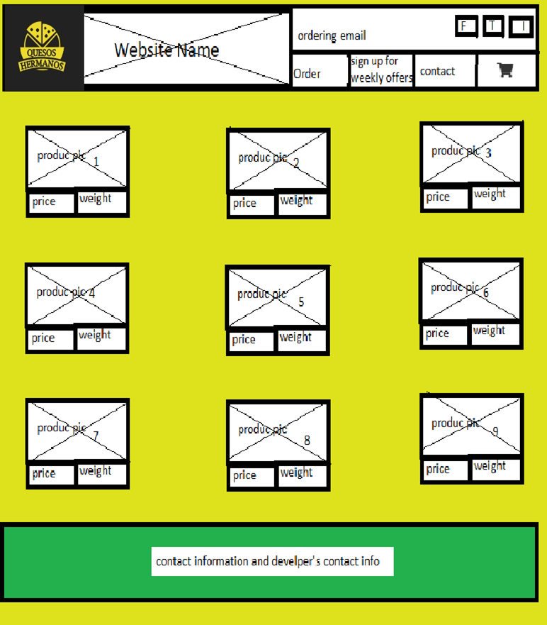

 As the audience will be people buying cheese, I think I’ll go for a yellow color, however I don’t want to bore the people with yellow everywhere.
The social media links will be on top as most of the publicity I’m planning comes from there.
Not sure now if I’ll keep 3 or 4 menu items as this is just a website for the final assignment that I’ll add more thing later. At this moment I don’t need to have everything ready, so, probable I might stay with 3
This part is the same stile for every item; however, I might have at the bottom a next button or something to allow user to see more.
What you buy, will be in a FORM, so, I’ll generate one big request that later will be processed by a server, unknown how at this time.
Business permissions, and contact information will be here. Also, I might also include some other classic items that might be found in order websites.